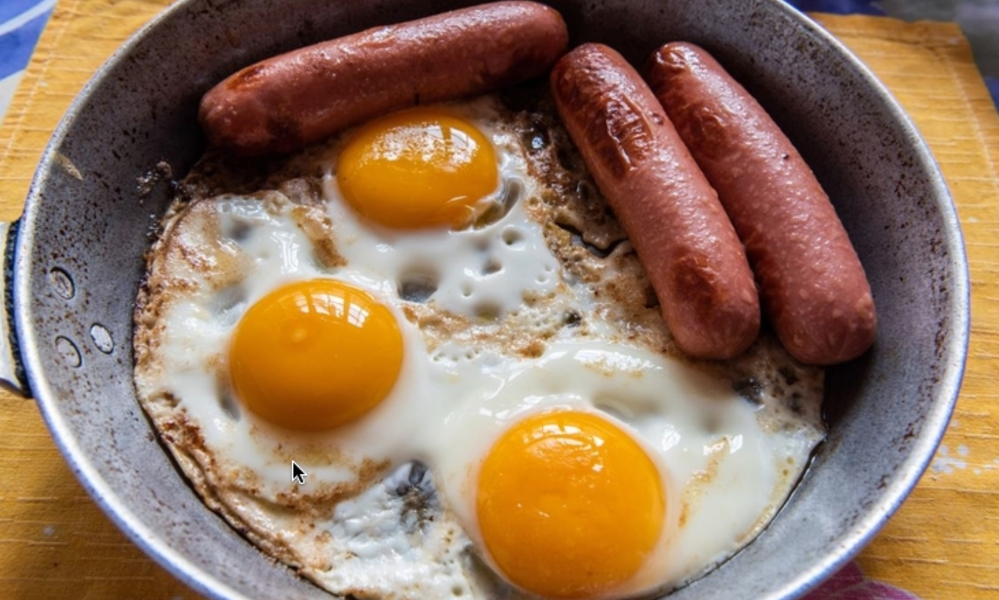

Sausage and eggs

Super simple S + E
This is made to be quick, easy, nutritious and healthy
Ingredients
- 4-6 farm fresh eggs
- 4-6 grass feed organic beef sausages no additives
Instructions
- Heat webber bbq or cast iron pan to a high heat
- Throw sausages on and cook 8 minutes a side
- Cook eggs in remaining sausage fat, fry until desired level
- Enjoy your perfectly balanced seed oil free breakfast
homepage